Simple view, Light tab, new header
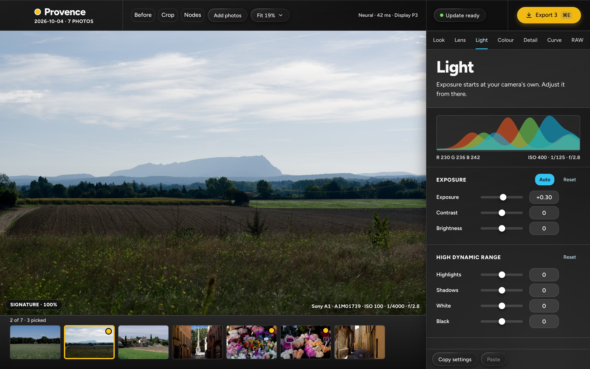
Today's Photos screen on the Light tab. The header is now Before, Crop, Nodes, Add photos, Fit. Pick white has left the header.
- Nodes is the same toggle as Crop. Its tooltip reads "Nodes (N)". It is pressed in the node view.
- Nothing else in the simple view changes. The folder is called Provence and holds 7 of the owner's photos.
Simple view, Colour tab: Pick white (off)
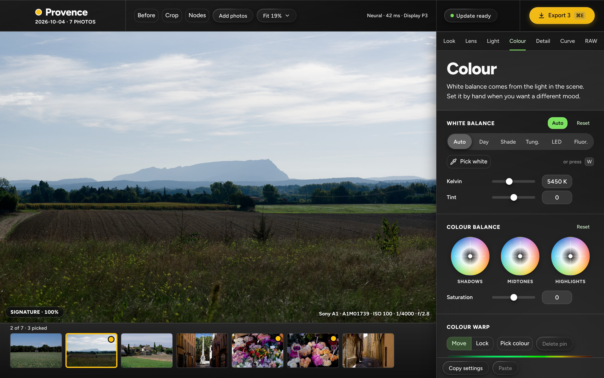
The White balance card has a Pick white toggle with an eyedropper, in the style of Colour warp's Pick colour.
- Placed on a row of its own, between the light presets and the Kelvin slider. The card header already holds AUTO and Reset, and the row has room for "or press W".
- W opens the Colour tab and starts picking. Like Pick colour, picking stops when the Colour tab is left.
Simple view, picking white
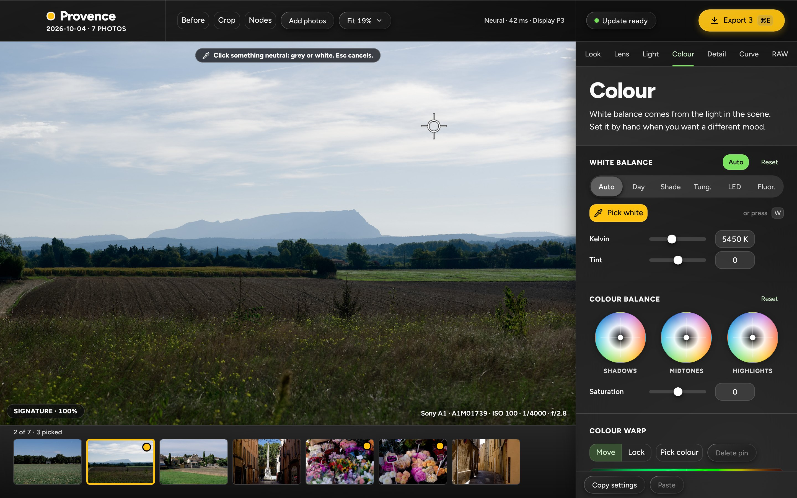
While picking: the toggle is pressed (yellow), the hint is a glass pill at the top centre of the photo, and the cursor is a crosshair over something neutral, here a pale cloud.
- The pill is the "Object found" pill, with the hint that used to sit in the header: "Click something neutral: grey or white. Esc cancels."
- The crosshair is white with a dark outline so that it reads on light and dark parts of a photo. The spot drawn is a cloud of about R 221, G 224, B 229.
Simple view of a photo with four nodes
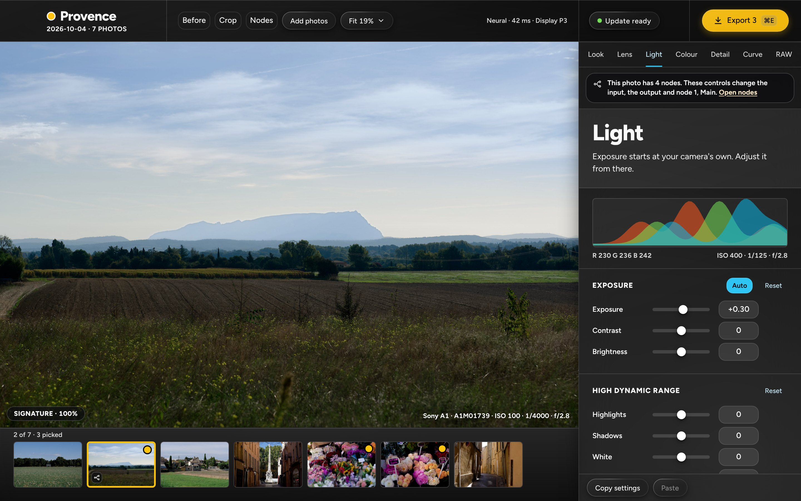
The notice under the tab row now says what the controls change: "This photo has 4 nodes. These controls change the input, the output and node 1, Main." with Open nodes. The filmstrip thumbnail has the node glyph.
- Two lines. The link sits at the end of the text, so that the pill does not grow to three lines.
- The photo shows the result of all four nodes.
Node view, untouched photo (layout A)
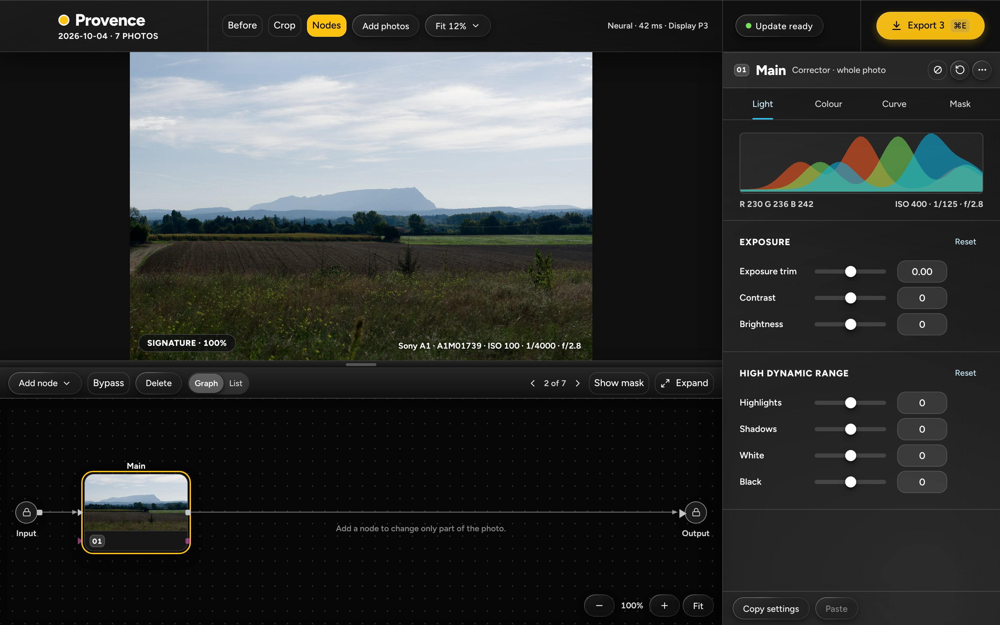
Input, 01 Main, Output. Main is selected. The simple view is this one-node graph.
- Layout A is decided: the viewer on top (666 × 444), a divider with a grab handle, the editor below it (371 px). The inspector stays 400 px wide and full height.
- The node head is compact: number chip, name at 20 px, a quiet line, and three small icon buttons (Bypass, Reset, More). A corrector has four tabs, Light · Colour · Curve · Mask. There is no 40 px tab title.
- The toolbar has a new Graph · List switch after Delete (screen 13). Key ports stay on every node, in the Mask accent.
Add node menu
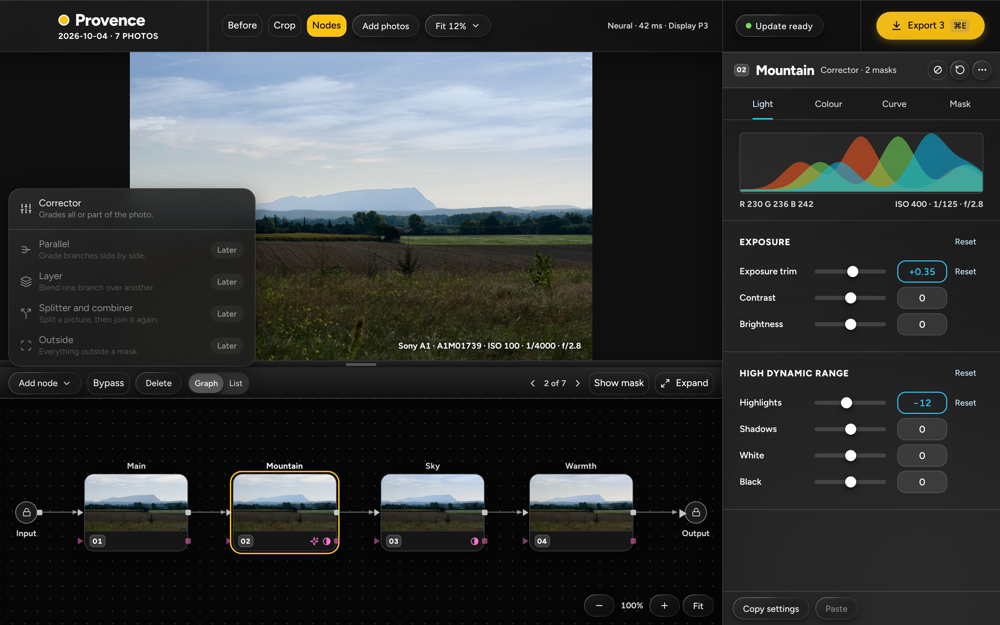
The graded graph, Input, 01 Main, 02 Mountain, 03 Sky, 04 Warmth, Output, with the Add node menu open: Corrector, a separator, then Parallel, Layer, Splitter and combiner, and Outside, greyed with a Later tag.
- 02 Mountain is selected on its Light tab. A node after the first has an exposure trim and no AUTO: Auto belongs to the Input.
- The node cards no longer show a look glyph: the look is set once, on the Output.
Masks add up: Object, minus a Radial
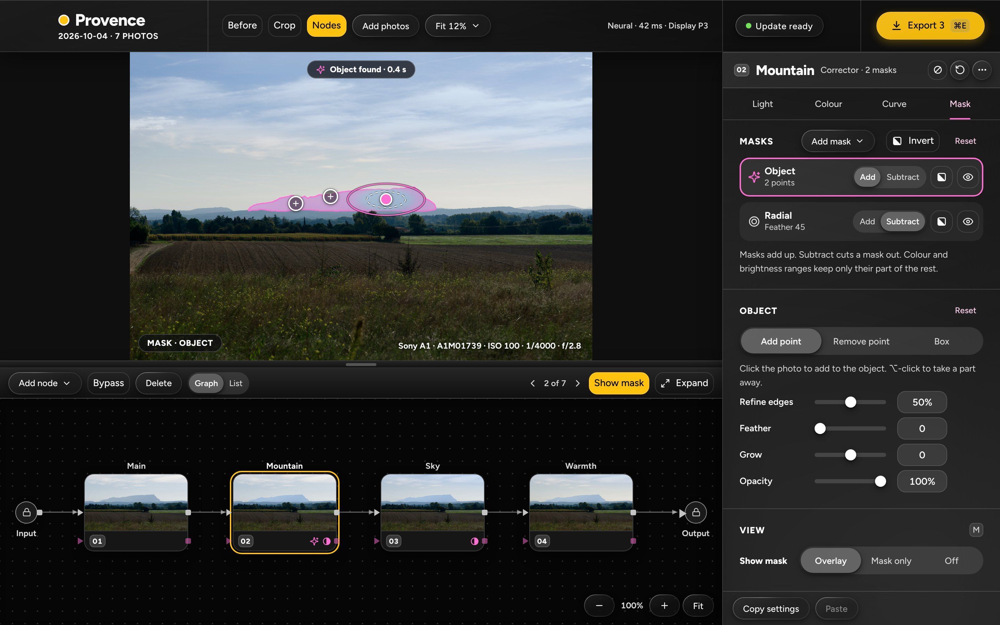
02 Mountain on the Mask tab. Two mask rows: Object (Add, selected) and Radial (Subtract). The photo shows the mountain tinted, with a soft hole where the radial is, and the radial's outline and centre handle.
- The three Mask cards fit without scrolling at 1440 × 900: 674 px of cards in a 678 px scroll area. A third mask row (about 89 px) would make the panel scroll.
- The Masks card header is Add mask, Invert (the whole node's mask) and Reset. Each row has Add or Subtract, an Invert icon toggle for that mask, and the eye. The Object card lost its Invert switch.
- Under the rows, one line: "Masks add up. Subtract cuts a mask out. Colour and brightness ranges keep only their part of the rest."
The mask rows with one Invert pressed
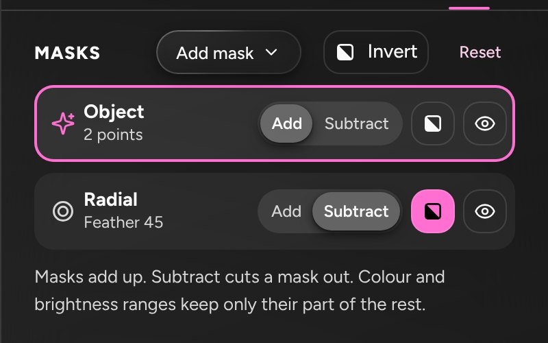
A crop of the Masks card with the Invert toggle of the Radial row pressed (in the Mask accent).
- Pressed means this mask alone is inverted. The Invert in the card header inverts what all the masks give together.
Add mask menu
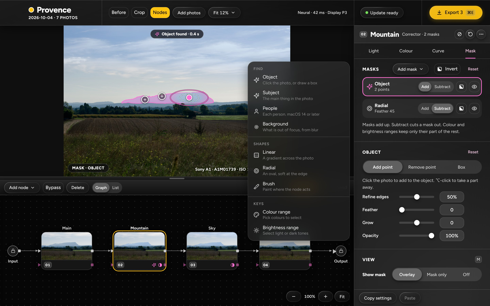
Like 07, with the Add mask menu open: Find (Object, Subject, People, Background), Shapes (Linear, Radial, Brush), Keys (Colour range, Brightness range).
- The menu opens to the left of the panel because it is 520 px tall.
Linear mask on 03 Sky
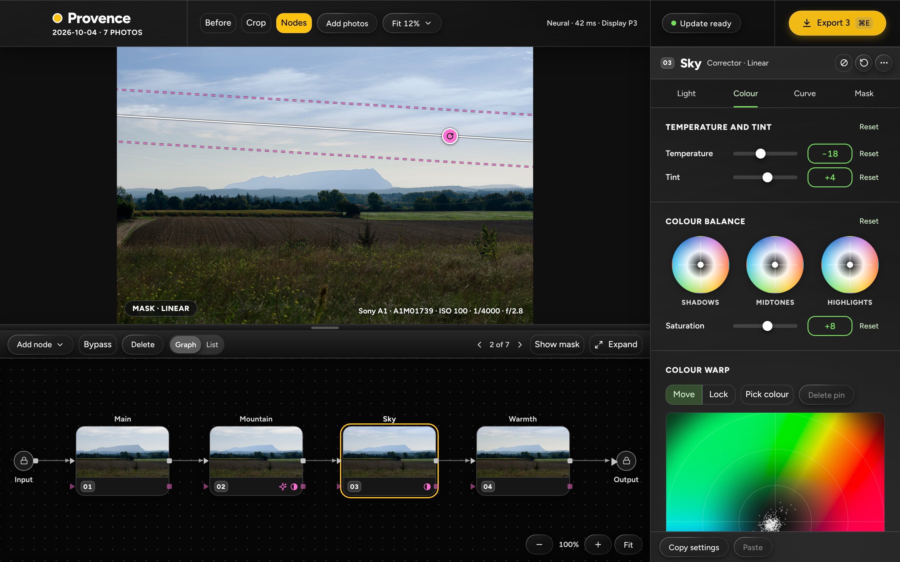
03 Sky on the Colour tab with its linear mask on the photo: a solid centre line, a dashed start and end line, and a rotate handle. The overlay is off.
- A corrector's Colour tab is a Temperature and tint trim, then Colour balance and Colour warp. There is no Pick white here in this version.
The Input selected, Colour tab
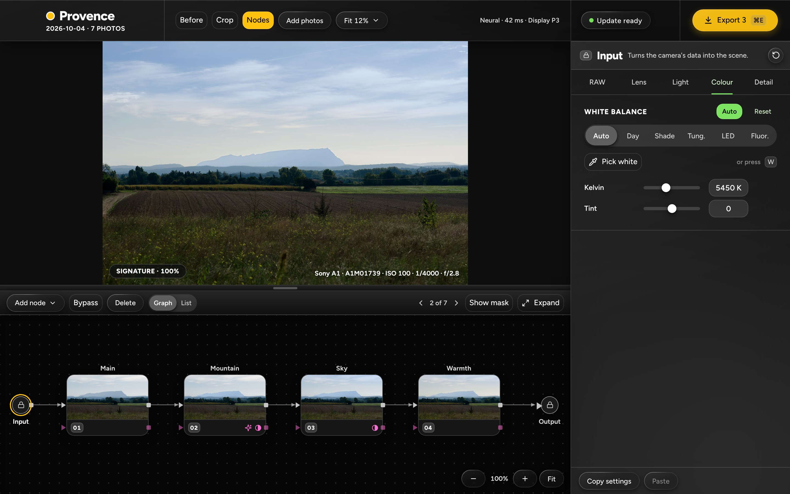
The Input marker is selected. Its tabs are RAW · Lens · Light · Colour · Detail. The Colour tab holds the real white balance, with Pick white.
- Only the White balance card belongs to the Input. Colour balance and Colour warp belong to the correctors, so the tab is short.
- In the node view W selects the Input and opens this tab, then starts picking.
The Output selected, Look tab
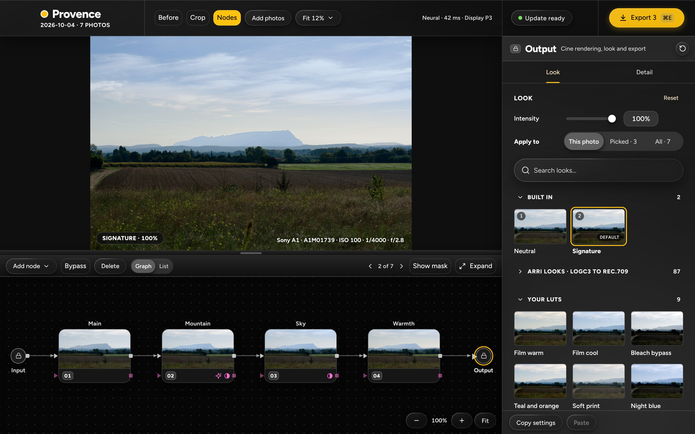
The Output marker is selected. Its tabs are Look · Detail. The Look tab is today's Look card: intensity, Apply to, search and the looks, with Signature chosen.
- The look is set once per photo, here. The look chip on the photo stays as it is, and the simple view's Look tab writes to the Output.
- Looks with a display rendering are in their own section (a folded imported library here, then Your LUTs). Detail holds only the Output sharpening row; it is not drawn.
Later: branches and mixers
Later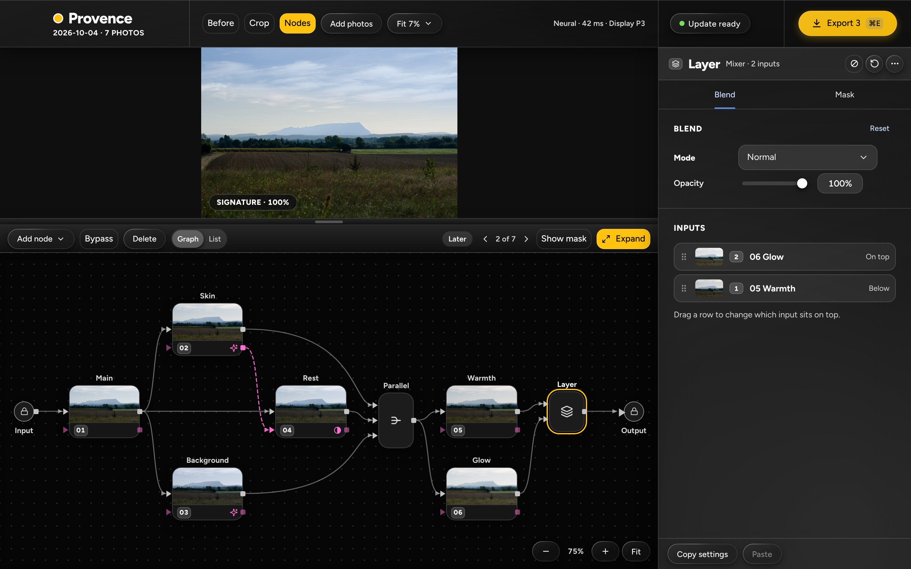
A non-linear graph, marked Later. Input, 01 Main, then 02 Skin, 03 Background and 04 Rest (an Outside node fed by 02's key output), a Parallel mixer, 05 Warmth, a Layer mixer with 06 Glow, Output.
- The inspector shows the Layer mixer: Mode (Normal), Opacity and the order of its inputs. One link crossing could not be avoided: 02's key link crosses Main's link to 04.